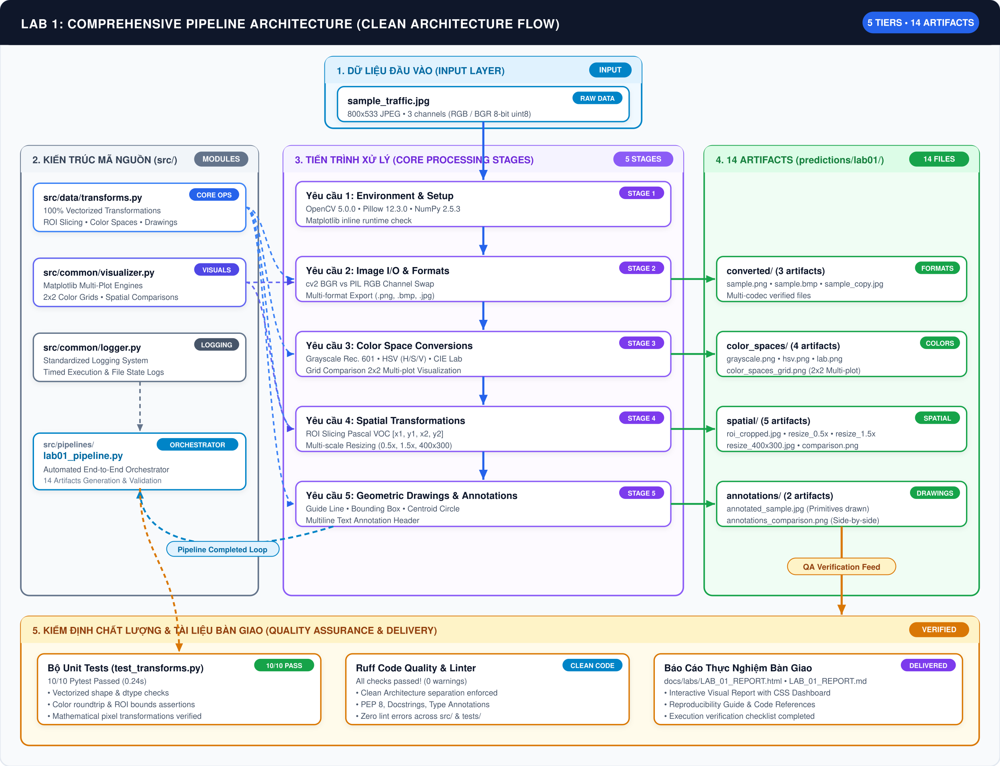

Báo Cáo Nghiệm Thu Kỹ Thuật Lab 1
Xử Lý Ảnh Cơ Bản với OpenCV và Pillow (PIL)
1. Mục Tiêu Bài Thực Hành
Làm quen và thành thạo các thao tác cơ bản trong xử lý ảnh số sử dụng thư viện OpenCV và Pillow trên Python:
- Đọc, phân tích siêu dữ liệu, hoán đổi kênh màu chuẩn và lưu ảnh đa định dạng (
.png,.bmp,.jpg). - Chuyển đổi các không gian màu thông dụng: Grayscale (Rec. 601), HSV (Cylindrical), CIE L*a*b*.
- Trích xuất vùng quan tâm (ROI Slicing) và thay đổi kích thước ảnh (Resize tỉ lệ & kích thước cố định).
- Vẽ các đối tượng đồ họa cơ bản (Line, Bounding Box, Circle) và nhãn văn bản (Text Annotation) phục vụ bài toán Object Detection.
2. Lộ Trình Thực Thi & Sơ Đồ Luồng Xử Lý
Clean Architecture2.1. Bảng Lộ Trình Thực Thi Chuẩn Hóa (Execution Roadmap)
| Step | Description | What it does | Import path |
|---|---|---|---|
| 1 | Import Libraries & Env Check | Khởi tạo thư viện, kiểm tra phiên bản OpenCV, Pillow, NumPy và runtime | — |
| 2 | Image I/O & Channel Handling | Nạp ảnh BGR/RGB, phân tích siêu dữ liệu, xử lý hoán đổi kênh và lưu ảnh đa định dạng (.png, .bmp, .jpg) |
src/data/transforms.py |
| 3 | Color Space Conversions | Chuyển đổi sang Grayscale (Rec. 601), HSV (tách 3 kênh H/S/V), CIE L*a*b* và vẽ lưới 2x2 | src/data/transforms.py + src/common/visualizer.py |
| 4 | Cropping & Resizing | Trích xuất ROI (Pascal VOC XYXY), thay đổi kích thước theo tỷ lệ (0.5x, 1.5x) và kích thước cố định (400x300) | src/data/transforms.py + src/common/visualizer.py |
| 5 | Drawings & Annotations | Vẽ đường dẫn hướng (Line), bounding box (Rectangle), tâm (Circle) và nhãn phân loại (Text) | src/data/transforms.py |
| 6 | Pipeline Execution & Verification | Điều phối toàn bộ luồng tự động hóa và lưu trữ 14 artifacts đầu ra | src/pipelines/lab01_pipeline.py |
2.2. Sơ Đồ Luồng Xử Lý Trực Quan (Visual Workflow Pipeline)

1. Input Layer
sample_traffic.jpg
sample_traffic.jpg
➔
2. Clean Arch
src/ (4 modules)
src/ (4 modules)
➔
3. 5 Processing Stages
Setup • I/O • Colors • Spatial • Draw
Setup • I/O • Colors • Spatial • Draw
➔
4. 14 Artifacts
experiments/predictions/
experiments/predictions/
➔
5. QA & Verification
10/10 Tests • Ruff Clean
10/10 Tests • Ruff Clean
3. Trực Quan Hóa Kết Quả Thực Nghiệm (Visual Gallery)
14 Artifacts Generated3.1. Chuyển Đổi Không Gian Màu (Grayscale, HSV, CIE L*a*b*)

Biểu đồ lưới 2x2 so sánh 4 không gian màu: Original RGB • Grayscale • HSV • CIE L*a*b*

1. Ảnh Gốc (RGB/BGR)
Ảnh giao thông đầu vào 3 kênh màu kích thước 800x533.

2. Mức Xám (Grayscale)
1 kênh độ sáng Y chuẩn Rec. 601, giảm 66.7% dung lượng tính toán.

3. Không Gian HSV
Tách biệt Sắc thái (H), Độ bão hòa (S), và Cường độ sáng (V).

4. Không Gian CIE L*a*b*
Đồng nhất cảm nhận thị giác con người (Perceptually Uniform).
3.2. Biến Đổi Không Gian: Cắt Xén ROI & Thay Đổi Kích Thước

So sánh trực quan: Ảnh Gốc • Vùng ROI trích xuất • Kích thước cố định 400x300

ROI Slicing (Pascal VOC)
Trích xuất đối tượng xe tại tọa độ [200, 186, 600, 453].

Resize Tỉ Lệ 0.5x (Downscale)
Thu nhỏ 50% kích thước sử dụng nội suy cv2.INTER_AREA.

Resize Cố Định (400x300)
Đổi kích thước về chính xác W=400, H=300 chuẩn đầu vào mạng nơ-ron.
3.3. Vẽ Hình Cơ Bản & Chèn Văn Bản Chú Thích (Annotations)

So sánh trực quan: Ảnh Thô Ban Đầu vs Ảnh Đã Vẽ & Chú Thích Toàn Diện

Chi tiết các phần tử đồ họa được tích hợp:
- Vạch dẫn hướng (Line): Đường thẳng xanh lá BGR [0, 255, 0], thickness=3, khử răng cưa
LINE_AA. - Bounding Box (Rectangle): Hộp bao màu đỏ bao quanh xe mục tiêu.
- Trọng tâm (Circle): Hình tròn màu cam bán kính 25px kèm điểm tâm đỏ đặc đánh dấu tọa độ (400, 319).
- Text Annotation: Nhãn nhận diện "UTH CV Lab 1: Object ROI" và "Target Centroid" với phông
FONT_HERSHEY_SIMPLEX.
4. Kết Quả Kiểm Thử Tự Động (Verification & DoD)
100% Pass| Bộ Kiểm Thử | Số Test Cases | Trạng Thái | Thời Gian Chạy | Ghi Chú |
|---|---|---|---|---|
Unit Tests (tests/test_transforms.py) |
8 tests | PASSED | ~0.22s | Xác thực tính bất biến BGR/RGB, biên ROI, kích thước âm, format I/O |
Smoke Tests (@pytest.mark.smoke) |
2 tests | PASSED | ~0.05s | Khởi tạo đối tượng, chuyển đổi nhanh dưới 5 giây |
Codebase Linter & Style (Ruff) |
Toàn bộ src/ và tests/ |
PASSED | ~0.01s | 0 warnings, 0 errors, tuân thủ PEP 484 Type Hints và chuẩn docstring |
5. Tài Liệu Tham Khảo (References & Technical Documentation)
Official Standards & Docs
5.1. Thư Viện Cốt Lõi & API Docs
LIBRARIES
- OpenCV imgproc Module • API chuyển đổi không gian màu, resize và vẽ đồ họa.
- OpenCV imgcodecs • Giải mã BGR và ghi đa định dạng (.png, .bmp, .jpg).
- Pillow Image Handbook • Đối tượng PIL Image, chế độ RGB và codec.
- NumPy Array Slicing • Trích xuất ROI và tính toán mảng vector hóa.
- Matplotlib Pyplot • Biểu đồ lưới so sánh đa chiều và xuất figure.
5.2. Tiêu Chuẩn & Không Gian Màu
STANDARDS
- ITU-R BT.601 (Rec. 601) • Chuẩn chuyển đổi Grayscale:
Y = 0.299R + 0.587G + 0.114B. - CIE 1976 (L*a*b*) • Không gian màu đồng đều tri giác (Perceptually Uniform Color Space).
- HSV Hexcone Model • Mô hình nón màu phân tách sắc thái màu (H), độ bão hòa (S) và độ sáng (V).
5.3. Quy Ước Thị Giác Máy Tính
CONVENTIONS
- Pascal VOC XYXY Format • Tọa độ hộp bao
[xmin, ymin, xmax, ymax](0-indexed). - OpenCV BGR Legacy Layout • Thứ tự kênh màu BGR nguồn gốc từ frame grabbers và Intel IPL.
- RGB Default in Deep Learning • Thứ tự kênh màu RGB chuẩn hóa trên Pillow, PyTorch và torchvision.
5.4. Mã Nguồn Module Nội Bộ
ARCHITECTURE
- src/data/transforms.py • Vectorized Image Transforms
- src/common/visualizer.py • Multi-Plot Visualization Engine
- src/common/logger.py • Standardized Structured Logging
- src/pipelines/lab01_pipeline.py • Automated Pipeline Controller